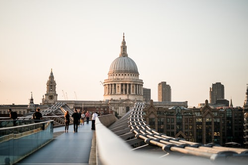

St Paul's Cathedral

St Paul's Cathedral, as we know it today post rebuild after the Great Fire of London,
is one of London's most iconic buildings. Built in the 17th century and situated in a prime central location near the Thames. St Paul's Cathedral
stands proudly at a grand height of 111m. It was the tallest building in London
of this Cathedral, restrictions are in place to prevent building skyscrapers that
might block the view of St Paul's from other locations in London.
St. Pauls Cathedral offers a tour guide Monday - Saturday, great for family's, individual's or group's
click here to find out more.
Enjoy the view of St.Pauls from the chic Madison rooftop terrace, where they provide food, drinks and music
visit here for more information ;D